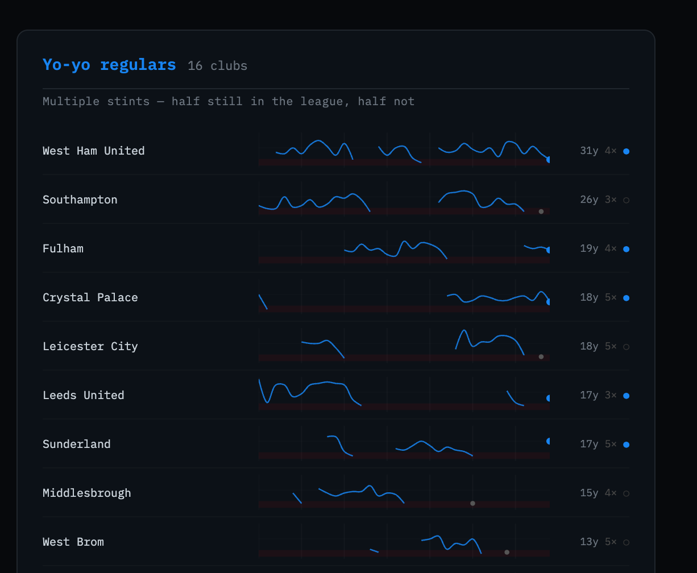
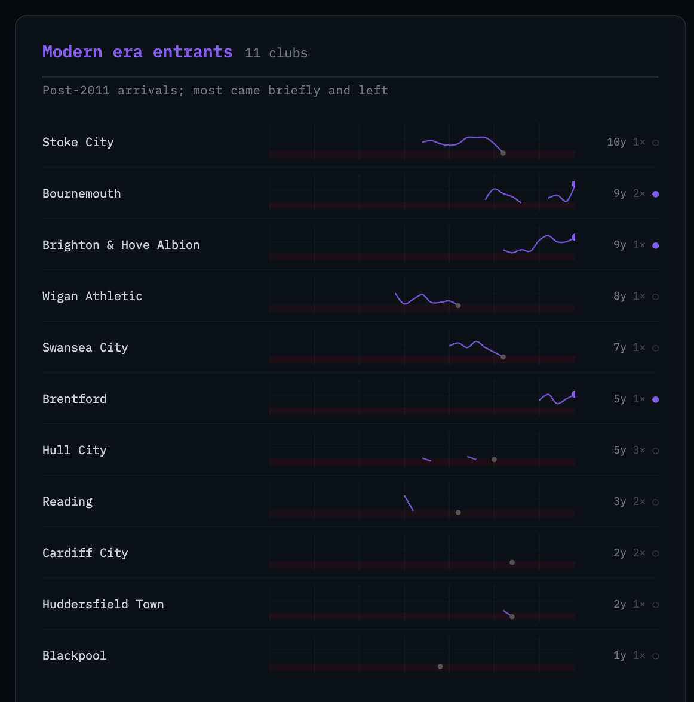

Clustering EPL Club Trajectories with k-means
In a companion post I built an interactive chart showing every Premier League finish for all 52 clubs across 34 seasons. While building it, I noticed that the trajectory lines fell into recognizable shapes — some clubs always present, others flickering in and out, others appearing once and vanishing. The visual pattern suggested a taxonomy. This post is the technical walkthrough of how I formalized it with k-means clustering.
All code is available in the project repository. The cluster visualization produced at the end of this post is at trajectories.html.
Getting the data
Before clustering anything, we need verified standings. The initial version of this project had the standings hand-typed from memory — which produced at least one confirmed error (Coventry City shown as relegated in 1991/92 when they weren’t) and unknown others. The right fix is to derive every table from actual match results.
The data pipeline lives in fetch_standings.py. Run it once before anything else:
python fetch_standings.py # writes data/standings_verified.json
python generate.py # reads that file, writes index.htmlTwo sources cover the full 35-season range:
| Source | Seasons | Notes |
|---|---|---|
| football-data.co.uk | 1993/94 → 2025/26 | Primary. One schema, 32 years, free, no auth required. |
| jalapic/engsoccerdata | 1991/92 + 1992/93 | Secondary — the only two seasons the primary doesn’t cover. |
Both sources provide raw match results, not pre-computed tables. Every finishing position is derived using the same function:
def build_table(matches):
"""
matches: list of (home, away, home_goals, away_goals)
Returns: {team_name: finishing_position}
Tiebreakers: points → goal difference → goals scored.
"""
pts = defaultdict(int)
gf = defaultdict(int)
ga = defaultdict(int)
for home, away, hg, ag in matches:
gf[home] += hg; ga[home] += ag
gf[away] += ag; ga[away] += hg
if hg > ag: pts[home] += 3
elif hg < ag: pts[away] += 3
else: pts[home] += 1; pts[away] += 1
ranked = sorted(
pts.keys(),
key=lambda t: (-pts[t], -(gf[t] - ga[t]), -gf[t], t)
)
return {team: pos + 1 for pos, team in enumerate(ranked)}The same build_table() runs on both sources. There’s no mixing of pre-computed tables from different methodologies — just match results in, ranked finishing positions out. The secondary source is used for exactly two seasons, and that’s documented explicitly in the script.
football-data.co.uk uses shortened team names ("Man United", "Nott'm Forest"). A normalisation dict in fetch_standings.py maps these to the canonical names used everywhere else in the project before any table is built.
The data
Once fetch_standings.py runs, data/standings_verified.json contains the merged output. generate.py auto-detects this file and uses it in preference to any hand-typed fallback. The structure is straightforward: for each of the 52 clubs, a pos array of length 35 records their league position in each season from 1991/92 through 2025/26. A None entry means the club wasn’t in the top flight that season.
import json
with open("data/standings_verified.json") as f:
d = json.load(f)
seasons = d["seasons"] # list of 35 season strings, e.g. "1992/93"
teams = d["teams"] # dict of 52 clubsTo get a sense of what we’re working with:
print(f"{len(seasons)} seasons, {len(teams)} clubs")
print(f"First season: {seasons[0]}, last: {seasons[-1]}")
print(f"\nArsenal pos array (first 10): {teams['Arsenal']['pos'][:10]}")
print(f"Barnsley pos array: {teams['Barnsley']['pos']}")35 seasons, 52 clubs
First season: 1991/92 (First Div.), last: 2025/26
Arsenal pos array (first 10): [4, 10, 4, 12, 5, 3, 1, 2, 2, 2]
Barnsley pos array: [None, None, None, None, None, None, 19, None, ...]Arsenal has a position in every slot — they’ve never been relegated. Barnsley has a single 19 in slot 6 (the 1997/98 season) and None everywhere else. That contrast is exactly what the clustering will formalize.
Feature engineering
The raw pos array isn’t suitable input for a clustering algorithm directly — it’s a ragged time series with gaps. Instead, I extract six scalar features that summarize the shape of each club’s EPL career.
def extract_features(pos):
present = [i for i, p in enumerate(pos) if p is not None]
if not present:
return None
n_seasons = len(present) # total seasons in the EPL
first_season = present[0] # index of first EPL appearance
last_season = present[-1] # index of last EPL appearance
currently_in = 1 if pos[-1] is not None else 0 # in the league right now?
# count separate stints — a new stint begins after any gap in presence
stints = 1
for i in range(1, len(present)):
if present[i] != present[i - 1] + 1:
stints += 1
# longest unbroken run of consecutive seasons
run, max_run = 1, 1
for i in range(1, len(present)):
run = run + 1 if present[i] == present[i - 1] + 1 else 1
max_run = max(max_run, run)
return [n_seasons, first_season, last_season, currently_in, stints, max_run]A few notes on the feature choices:
n_seasonsseparates long-tenured clubs from brief visitors.first_seasondistinguishes the founding members (index 0 or 1) from modern arrivals (index 20+).currently_inis a binary flag — it matters whether a club is still present.stintscaptures the yo-yo pattern directly. Arsenal has 1. Burnley has 5.max_consecutive_rundistinguishes a club that played 18 scattered seasons from one that played 18 in a row.
Scaling and clustering
k-means is sensitive to feature scale. n_seasons runs 1–35; currently_in is binary. Without standardization, seasons would dominate the distance calculation and the binary flags would contribute almost nothing.
import numpy as np
from sklearn.preprocessing import StandardScaler
from sklearn.cluster import KMeans
team_names = [t for t in teams if extract_features(teams[t]["pos"]) is not None]
X = np.array([extract_features(teams[t]["pos"]) for t in team_names])
scaler = StandardScaler()
X_scaled = scaler.fit_transform(X)For k, I used 4. The three trajectory types visible in the chart — always present, yo-yo, one-time visitors — imply at least 3. When I ran the clustering, a fourth group separated cleanly: clubs that arrived after 2011 and have a distinct profile from the historic one-time visitors (later first_season, shorter max_run, several still present). Four clusters is defensible from the data.
np.random.seed(42)
km = KMeans(n_clusters=4, n_init=20, random_state=42)
labels = km.fit_predict(X_scaled)n_init=20 runs the algorithm from 20 different random starting points and takes the best result. k-means can get stuck in local minima depending on initialization; running it multiple times reduces that risk.
Results
Here are the four clusters, sorted by average seasons played.
feature_cols = ["n_seasons", "first_season", "last_season",
"currently_in", "stints", "max_consecutive_run"]
for c in sorted_clusters:
members = [team_names[i] for i, l in enumerate(labels) if l == c]
feats = [extract_features(teams[t]["pos"]) for t in members]
print(f"\nCluster {c} — {len(members)} clubs")
print(f" avg seasons: {np.mean([f[0] for f in feats]):.1f}")
print(f" avg first idx: {np.mean([f[1] for f in feats]):.1f}")
print(f" currently in: {np.mean([f[3] for f in feats])*100:.0f}%")
print(f" avg stints: {np.mean([f[4] for f in feats]):.2f}")
print(f" members: {', '.join(sorted(members))}")Cluster — 9 clubs [Permanent fixtures]
avg seasons: 33.7
avg first idx: 0.2
currently in: 100%
avg stints: 1.56
members: Arsenal, Aston Villa, Chelsea, Everton, Liverpool,
Manchester City, Manchester United, Newcastle United, Tottenham Hotspur
Cluster — 16 clubs [Yo-yo regulars]
avg seasons: 14.9
avg first idx: 4.3
currently in: 50%
avg stints: 4.19
members: Burnley, Crystal Palace, Fulham, Ipswich Town, Leeds United,
Leicester City, Middlesbrough, Norwich City, Nottingham Forest,
Sheffield United, Southampton, Sunderland, Watford, West Brom,
West Ham United, Wolverhampton Wanderers
Cluster — 11 clubs [Modern era entrants]
avg seasons: 5.5
avg first idx: 20.9
currently in: 27%
avg stints: 1.45
members: Blackpool, Bournemouth, Brentford, Brighton & Hove Albion,
Cardiff City, Huddersfield Town, Hull City, Reading,
Stoke City, Swansea City, Wigan Athletic
Cluster — 16 clubs [Departed regulars]
avg seasons: 6.6
avg first idx: 3.5
currently in: 0%
avg stints: 1.62
members: Barnsley, Birmingham City, Blackburn Rovers, Bolton Wanderers,
Bradford City, Charlton Athletic, Coventry City, Derby County,
Luton Town, Notts County, Oldham Athletic, Portsmouth, QPR,
Sheffield Wednesday, Swindon Town, WimbledonA few things worth noting in the results:
West Ham ends up in the yo-yo cluster despite 31 seasons — because they’ve had four separate stints, which pushes their stints feature above the permanent fixtures group. Whether that’s correct is debatable; they’re a borderline case.
Brighton lands in the modern entrants cluster, which is right on average-feature grounds — but their 9 consecutive seasons and current top-half standing make them the obvious outlier within that group. The cluster analysis surfaces the pattern; the interpretation still requires looking at the actual data.
The departed regulars and the yo-yo regulars have similar first_season averages (3.5 vs 4.3), meaning both groups were present early. What separates them is stints (1.62 vs 4.19) and currently_in (0% vs 50%). The departed regulars mostly had one sustained run and then dropped out permanently. The yo-yo clubs kept coming back.
Visualizing the clusters
The companion script generate_trajectories.py takes the cluster assignments and produces a self-contained HTML file — trajectories.html — showing each club as a sparkline grouped by cluster. The y-axis is league position (1 at the top, 20 at the bottom); gaps in the line are absent seasons; a filled dot marks the last known season.
python generate_trajectories.py
# → trajectories.html→ Open the trajectory cluster chart


The four groups separate visually in a way that validates the clustering: the permanent fixtures run wall-to-wall; the yo-yo regulars have interrupted lines that resume; the modern entrants cluster in the right half of the chart; the departed regulars have lines that end and don’t come back.
What’s next
A few natural extensions:
- Elbow method or silhouette score to validate k=4 rather than asserting it.
- Hierarchical clustering as a cross-check — does the dendrogram suggest the same groupings?
- Add average position as a feature — right now the clustering is purely about presence/absence patterns, not quality. Adding
avg_positionwould distinguish Leicester (multiple stints, one title) from Norwich (multiple stints, never threatening the top half). - Temporal split — run the clustering on just the first half of the dataset (1991–2008) and compare to the second half (2009–2026). Have the trajectory types shifted?
All code is in github.com/kpolimis/epl-standings.